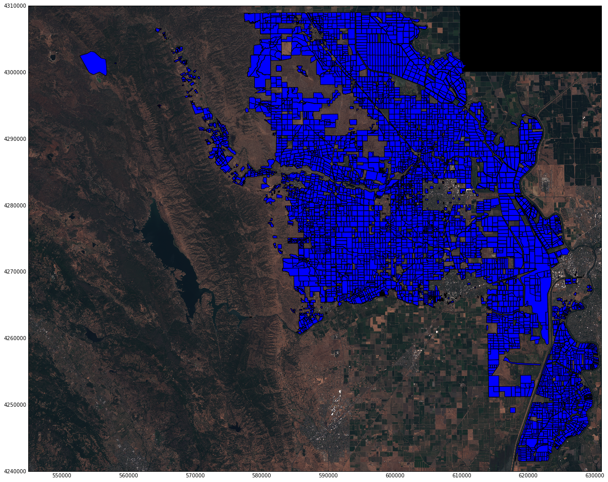

Executive Summary
The main goal of this project is to automate classification of crops growing in specific fields in Yolo County, CA, by using visible and infrared color bandwidths. After extracting the color bandwidths from two satellite images we implemented a model that correctly classifies crops growing in fields 90% of the time.
Crop Field Locations in Yolo County